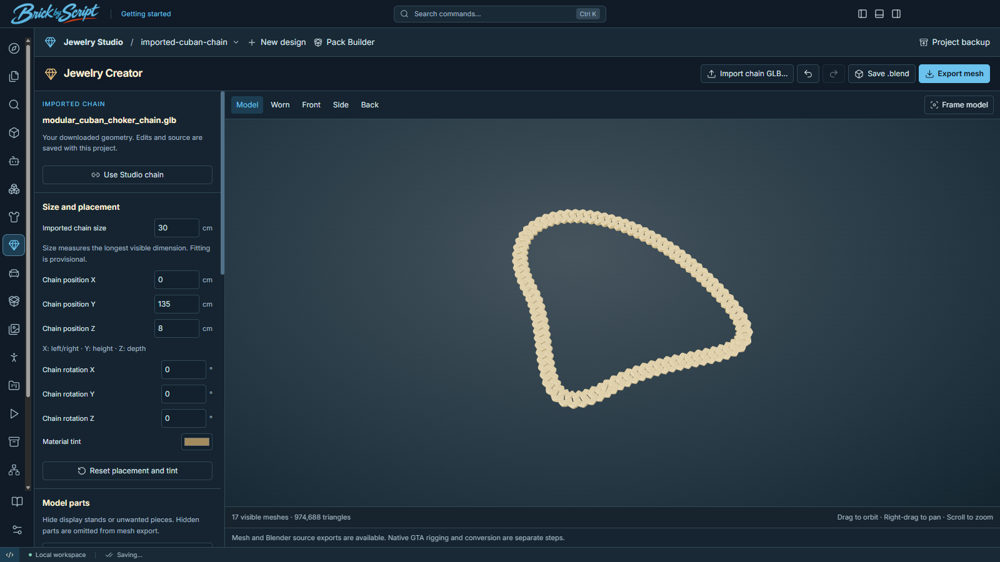

Work with imported chains
Open a premade chain, inspect its parts and proportions, and understand the difference between a mesh export and a wearable GTA accessory.


Start with an existing model#
This workflow is available in the 0.16.6 development build. You do not have to model every link yourself: Jewelry Studio can open a compatible chain GLB that you have permission to use.
Keep the original download and its license information. A downloadable model may include attribution requirements, and permission to use it does not necessarily mean you can redistribute the original asset as part of your own library.
Import and frame the chain#
- Open a Jewelry Studio design and choose Import chain GLB…. Select the actual downloaded
.glbfile. - Use Model and Frame model to inspect the complete import. Check its shape before adjusting its fit.
- Set Imported chain size. This measures the longest visible dimension in centimeters; it is not a necklace circumference measurement.
- Adjust the position and rotation fields to orient the model. Use Front, Side and Back to avoid judging the fit from only one angle.
A successful import should show the filename and a visible mesh count. If everything disappears, check whether all parts are hidden before importing again.
Inspect parts and finish#
Open Model parts to hide a display stand, plaque or other unwanted object included in the source. Hidden parts are omitted from the mesh export, so inspect that list before saving your final result. Show all parts restores their visibility.
Material tint changes the model's color presentation. It does not turn a rough, nonmetallic source material into a properly authored metallic GTA shader. Reset placement and tint restores the imported-chain placement defaults.
Worn uses a studio fitting character for a provisional visual check. That preview is not a rigged GTA ped result.
Choose an export path#
Export mesh and Save .blend preserve source work for the next stage. A generic imported GLB chain still needs suitable GTA rigging, materials and native conversion before it can be worn in game.
For an existing GTA accessory, use the Choose a GTA chain catalog, select the fitting body, accessory and texture, then choose Use this GTA accessory. This reads supported assets from your own Legacy installation. It is a different starting point from a generic chain download.
Check the native component workflow in Pack Builder and test the finished wearable on its intended character. Keep an editable backup before making further changes.